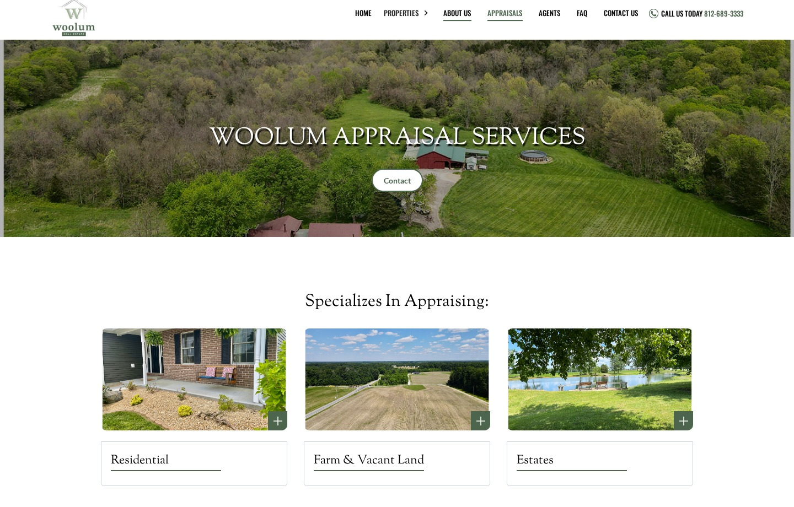
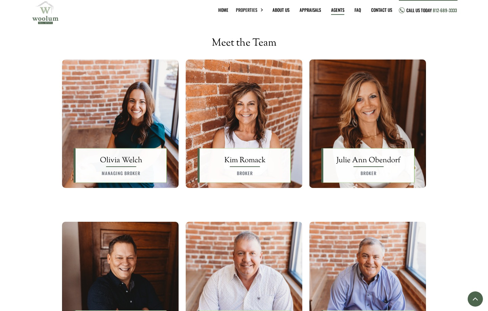

Woolum Real Estate
A new home online for a family-run real estate office in southeastern Indiana.
Visit the live website ↗Organization
Woolum Real Estate
Project type
Webflow redesign
My role
Full-site redesign and development
The challenge
Buyers, sellers, and appraisal clients come to the same brokerage with different questions. Its family history and local agents also needed space alongside the properties.
My approach
I redesigned the site in Webflow. The homepage brings together the firm’s story, featured listings, a first-time buyer’s guide, and a seller inquiry. A dedicated appraisal page and individual agent profiles give visitors a direct route to the right person.
My earlier work on the previous WordPress site included automated MLS listings, server management, and analytics. The gallery shows the newer Webflow redesign.




